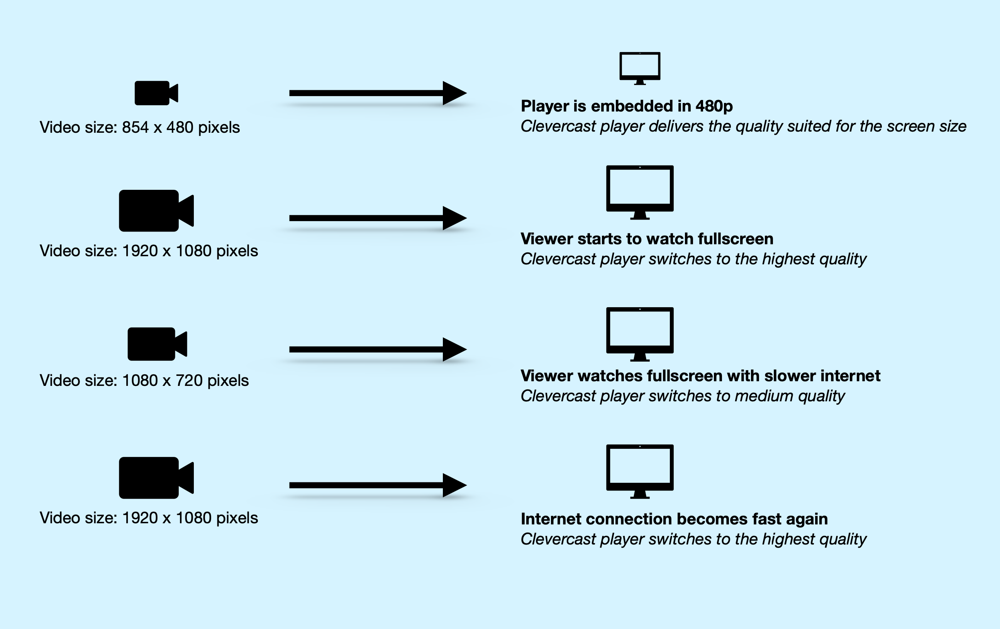
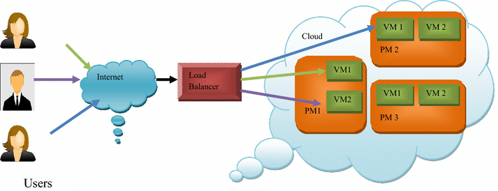

Yesterday, while watching Hotstar, I noticed an astonishing feat: nearly 900 million (90 crore) concurrent users streamed content flawlessly, with no lag or buffering. This seamless experience sparked curiosity about the technology powering Hotstar. The secret lies in advanced cloud computing, Content Delivery Networks (CDNs), adaptive streaming, and efficient backend architecture. Let’s break it down.
1. The Role of Content Delivery Networks (CDNs)
CDNs are the backbone of Hotstar’s ability to deliver content globally with minimal latency.

- What is a CDN? A globally distributed network of servers that caches content and delivers it from the nearest server to the user.
- How CDNs Enable Large-Scale Streaming:
- Caching Popular Content: Frequently watched shows or matches are stored on regional servers, reducing strain on the origin server.
- Load Balancing: Traffic is dynamically distributed to prevent any single server from overloading.
- Edge Computing: Real-time optimizations, like adaptive bitrate selection, are processed closer to the user.
2. Cloud Infrastructure and Auto-Scaling
Hotstar relies on cloud platforms (e.g., AWS, Google Cloud, or Azure) to manage massive traffic spikes.

- Key Cloud Strategies:
- Auto-Scaling Groups: Virtual servers scale up or down based on user demand.
- Containerized Microservices: Using tools like Docker and Kubernetes, components like authentication and video processing run independently for better efficiency.
- Multi-Region Deployments: Infrastructure spans multiple regions for lower latency and high availability.
3. Adaptive Bitrate Streaming (ABR)
ABR ensures uninterrupted streaming by adjusting video quality in real-time.
- How ABR Works:
- High-speed connection: Streams in Full HD or 4K.
- Fluctuating network: Automatically switches to lower resolutions (e.g., 720p or 480p) to avoid buffering.
- Result: Seamless playback across devices and network conditions.
4. Load Balancing and Edge Computing
Efficient traffic distribution and localized processing are critical for handling scale.
- Load Balancing: Intelligent algorithms distribute traffic across servers and regions, preventing crashes.
- Edge Computing Benefits:
- Processes data (e.g., analytics, authentication) at edge locations near users.
- Reduces latency and eases the load on central servers.
- Enables features like regional ad insertion.
5. Data Analytics and AI-Powered Predictions
Hotstar uses AI and machine learning to stay ahead of demand.
- AI Applications:
- Traffic Prediction: Anticipates spikes (e.g., IPL finals or World Cup matches).
- Pre-Scaling: Adjusts cloud infrastructure proactively.
- Optimized Delivery: Finds the best content delivery paths for efficiency.
- Outcome: A system prepared for peak loads, minimizing the risk of failure.
Conclusion
Hotstar’s ability to stream flawlessly for 900 million users is a testament to its sophisticated use of CDNs, cloud infrastructure, adaptive streaming, edge computing, and AI-driven forecasting. This technology ensures a lag-free experience, even under extreme demand.
Comments Section
Recent Comments